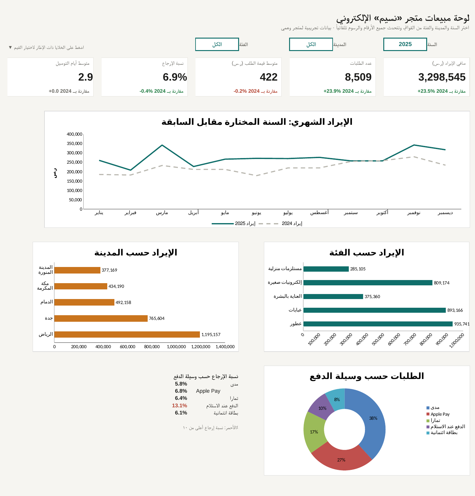
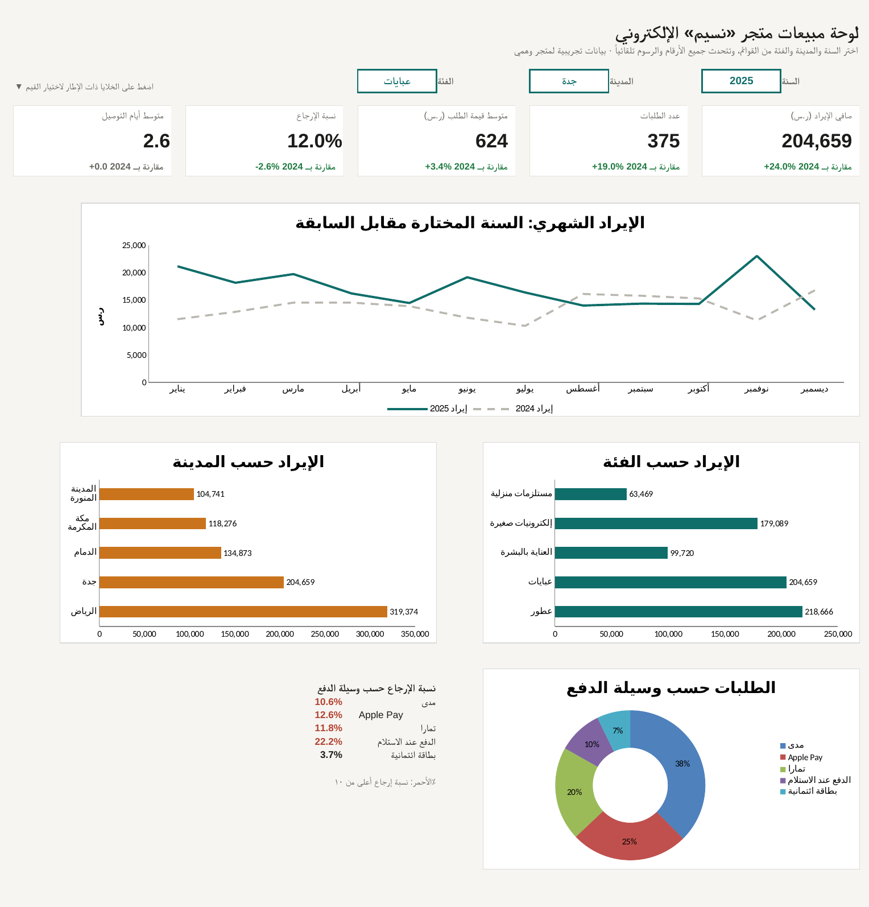

← BahaWorks — معرض الأعمالمشروع توضيحي · بيانات تجريبية
لوحة مبيعات تفاعلية في إكسل
Interactive Arabic Excel sales dashboard · no macros · Excel & LibreOffice
اختر السنة والمدينة والفئة من القوائم المنسدلة، فتتحدث المؤشرات والرسوم البيانية كلها فوراً، مع مقارنة تلقائية بالسنة السابقة. الملف مبني على أكثر من ١٥ ألف طلب لمتجر إلكتروني وهمي.
تحميل ملف الإكسل (١ ميغابايت)

ما الذي يتضمنه الملف
٥ مؤشرات رئيسيةصافي الإيراد، الطلبات، متوسط الطلب، نسبة الإرجاع، ومدة التوصيل، بلون أخضر أو أحمر حسب التحسن.
٤ رسوم بيانيةالإيراد الشهري مقابل السنة السابقة، الإيراد حسب الفئة والمدينة، ووسائل الدفع.
معادلات واضحة بلا ماكروSUMIFS و COUNTIFS في ورقة «الحسابات» يمكن مراجعتها خلية بخلية.
عربي من اليمين لليساركل الأوراق بالاتجاه العربي، مع ورقة «طريقة الاستخدام».
كيف بُني
بيانات الطلبات من مشروع تحليل المبيعات بعد تنظيفها، ثم بُني الملف بسكربت Python
(build_dashboard.py) وتم التحقق من أن أرقامه تطابق التحليل تماماً.